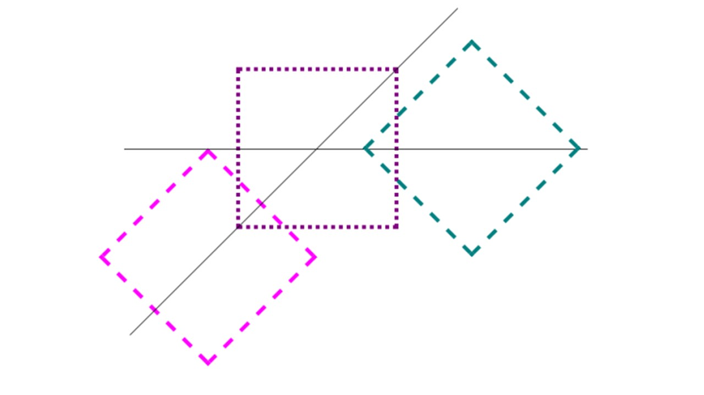
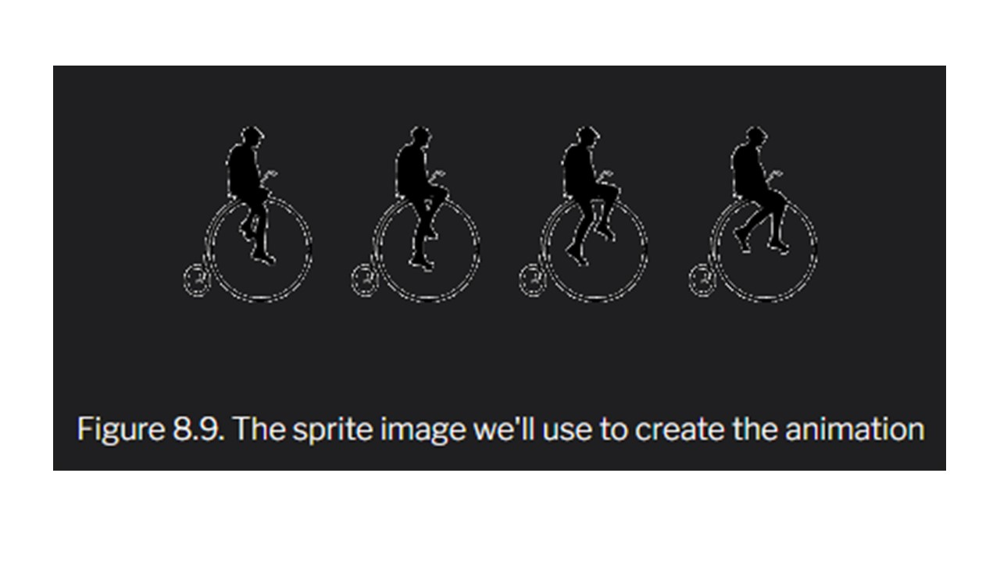

That was a lot of information and it sounds like fun to use! What are some common questions you get about canvas?
The CSS3 transform property lets you lets you translate, rotate, scale, and/or skew any element on the page.
While some of these effects were possible using previously existing CSS features (such as translating with relative and
absolute positioning), CSS3 gives you unprecedented control over many more aspects of the element’s appearance.
We can manipulate an element’s appearance using transform functions. The value of the transform property is one
or more transform functions (separated by spaces) that will be applied in the order they’re provided. In this book,
we’ll cover all the two-dimensional transform functions. All modern browsers, starting with IE10 and Android 3,
also support the transformation of elements in 3D space, but 3D transforms are beyond the scope of this book.
Translate: Translation functions allow you to move elements left, right, up, or down. These functions are similar
to the behavior of position: relative; when declaring top and left, moving elements up and down or left and right
along the x and y axes. When you employ a translation function, you’re moving elements without impacting the flow
of the document. Unlike position: relative, which allows you to position an element either against its current
position or against a parent or other ancestor, a translated element can only be moved relative to its current position.
Scaling: The scale(x,y) function scales an element by the defined factors horizontally then vertically. If only one value
is provided, it will be used for both the x and y values, growing or shrinking your element or pseudo-element while
maintaining the original aspect ratio. For example, scale(1) would leave the element the same size, scale(2) would
double its proportions, scale(0.5) would halve them, and so on.
Rotation: The rotate() function rotates an element around the point of origin by a specified angle value. As with scale,
by default the point of origin is the element’s center. Generally, angles are declared in degrees, with positive degrees
moving clockwise and negative moving counterclockwise. In addition to degrees, values can be provided in grads, radians,
or turns, but we’ll just be sticking with degrees.
Skew: The skew(x,y) function specifies a skew along the x and y axes. As you’d expect, the x specifies the skew on the x axis,
and the y specifies the skew on the y axis. If the second parameter is omitted, the skew will only occur on the x axis.
Changing the origin of the transformation: As we hinted at earlier, you can control the origin from which your transforms are applied. This is done using the transform-origin property. It has the same syntax as the background-position property, and defaults to the center of the object (so that scales and rotations will be around the center of the box by default).
Let’s say that you were transforming a circle. Because the default transform-origin is the center of the circle,
applying a rotate() transform to a circle would have no visible effect—a circle rotated 90 degrees still looks exactly
the same as it did before being rotated. An ellipse rotated 180 degrees around its center would also look the same as it
did before being rotated upside down. However, if you gave your circle or ellipse a transform-origin of 10% 10% or top
center, you would notice the rotation as Figure 8.7 illustrates.
The order of transform functions does matter: if you rotate before translating, your translate direction will be on the rotated axis. The rightmost square in Figure 8.8 was translated then rotated with transform: translateX(200px) rotate(135deg);. The leftmost square was rotated first then translated along the newly rotated axis: transform: rotate(135deg) translateX(200px);.
Animation has certainly been possible for some time with JavaScript, but native CSS transitions generally require less client-side processing, so they’ll usually appear smoother. On mobile devices with limited computing power, this can be a lifesaver.
CSS transitions are declared along with the regular styles on an element. Whenever the target properties change, the browser will apply the transition making the change gradual. Often the change will be due to different styles applied to a hover state; however, transitions will work equally well if the property in question is changed by adding a class, or otherwise using JavaScript to change state. This is significant: rather than writing out an animation in JavaScript, you can simply switch a property value and rely on the browser to do all the heavy lifting.
Here are the steps to create a simple transition using only CSS:
1.Declare the original state of the element in the default style declaration.
2.Declare the final state of your transitioned element; for example, a :hover state.
3.Include the transition functions in your default style declaration using the transition properties, including: transition-property, transition-duration, transition-timing-function, and transition-delay. We’ll look at each of these and how they work shortly.
The important point to note is that the transition is declared in the default or originating state. The -webkit- vendor prefix is still needed for older mobile devices, including iOS6.1, BlackBerry10, Android 4.3 and UC Browser for Android. All other browsers, including IE10 and Android 4.4 browser support the unprefixed syntax.
The Transistion-duration property: The transition-duration property sets how long the transition will take: the duration of time it takes to go from the default state to the transitioned state. You can specify this either in seconds (s) or milliseconds (ms). We’d like our animation to be fairly quick, so we’ll specify 0.2 seconds (0.2s), or 200 milliseconds (200ms).
The transition-timing-function property: The transition-timing-function lets you control the pace of the transition in even more granular detail. Do you want your animation to start off slow and become faster, start off fast and end slower, advance at an even keel, or some other variation?
The most common timing functions include the key terms ease, linear, ease-in, ease-out, or ease-in-out. The default ease has a slow
start, then it speeds up, and ends slowly. ease-in-out is similar to ease, but accelerates more sharply at the beginning. linear
creates a transition that animates at a constant speed. ease-in creates a transition that is slow to start but gains speed, then
stops abruptly. The opposite, ease-out, starts at full speed, then slows progressively as it reaches the conclusion of the transition.
The best way to familiarize yourself with them is to play around and try them all. Most often, one will just feel right for the
effect you’re aiming to create. It’s helpful to set a relatively long transition-duration when testing timing functions—if it’s
too fast, you may not be able to tell the difference.
The transition-delay property: Finally, by using the transition-delay property, it’s possible to introduce a delay before the transition begins. Normally a transition begins immediately, so the default is 0. Include the number of milliseconds (ms) or seconds (s) to delay the transition. We don’t want our transition to start immediately, because that might be a bad user experience if the user accidentally mouses through our ad on the way from one part of the document to the next. A 50ms delay is enough time to wait to be sure they are intentionally hovering over our advertisement:
Transitions animate elements over time; however, they’re limited in what they can do. You can define starting and ending states,
but there’s no fine-grained control over any intermediate states. CSS animations, unlike transitions, allow you to control each
step of an animation via keyframes. A keyframe is a snapshot that defines a starting or end point of any smooth
transition. With CSS transitions, we’re essentially limited to defining a first and a last keyframe. CSS animations
allow us to add any number of keyframes in between, to guide our animation in more complex ways.
Keyframes: To create an animation, use the @keyframes rule for IE10+ and FF16+. Include @-webkit-keyframes for all WebKit
implementations followed by a name of your choosing, which will serve as the identifier for the animation. Then, you can
specify your keyframes.
For an animation called myAnimation, the @keyframes rule would look like this:
@-webkit-keyframes myAnimation {
/* put animation keyframes here */
}
@keyframes myAnimation {
/* put animation keyframes here */
}
A few simple animations:
@keyframes moveRight {
from {
transform: translateX(-50%);
}
to {
transform: translateX(50%);
}
}
@keyframes appearDisappear {
0%, 100% {
opacity: 0;
}
20%, 80% {
opacity: 1;
}
}
@keyframes bgMove {
100% {
background-position: 120% 0;
}
}
Animation proerties:The animation properties, remembering that you will need two declarations for each property as the -webkit- prefix is still needed in WebKit browsers, are as follows:
animation-name: appearDisappear;
animation-duration: 300ms;
animation-timing-function: Like the transition-timing-function property, the animation-timing-function determines how the animation will progress over its duration. The options are the same as for transition-timing-function: ease, linear, ease-in, ease-out, ease-in-out, a developer-defined cubic-bezier() function, step-start, step-end, or a developer-defined number of steps with the steps(number, direction) function:
animation-timing-function: linear;
The bicycle in the advertisement on the right is animated in browsers that support animation. The bicycle is a background image, and while background images aren’t able to be animated, background-position is. We’ve created a sprite of four images with our silhouetted man pedaling, as shown in the Figure below
To make it look like he is pedaling along, we show the different images of the sprite in succession. To do this, we use the steps() function, moving the background image sprite through the sized background box in four steps. We move the background image to the left so that each image within the sprite is displayed in succession:
.ad-ad3 :after {
content: '';
width: 90px;
height: 92px;
background-image: url(../images/bike_sprite.png);
display: block;
margin: auto;
}
@keyframes bike {
0% {
background-position: 0 0;
}
100% {
background-position: -360px 0;
}
}
Our background image is 360px wide and our container is 90px wide. We want to show the background images in quick succession, with the background-position at 0 0, -90px 0, -180px 0, and -270px 0. Using steps(4, direction), if the direction is start we’ll see the 25%, 50%, 75%, and 100% keyframes. If the direction is end we’ll see the 0%, 25%, 50%, and 75% keyframes. At the 100% keyframe, the background image is completely off to the left—we don’t want to see this. At the 0% keyframe, the background image is at 0 0, which is the default value for background-position, and which will display the first image in our sprite. This is what we want:
animation-timing-function: steps(4, end);
animation-iteration-count: The animation-iteration-count property lets you define how many times the animation will play through. The value is generally an integer, but you can also use numbers with decimal points (in which case, the animation will end partway through an iteration), or the value infinite for endlessly repeating animations. If omitted, it will default to 1, in which case the animation will occur only once. The following is an example of using this property:
animation-iteration-count: infinite;
animation-direction: When the animation iterates, it normally goes from the 0% to the 100% keyframe, jumping back to the 0% when it starts a new iteration (if the animation-iteration-count is greater than 1). This is the default or normal value for animation-direction. You can use the animation-direction property to change this behavior.
The value of reverse will cause the animation to start at the 100% keyframe and work its way to the 0% keyframe for every iteration. With the alternate value, the initial iteration and odd-numbered iterations after that will go in the normal 0% to 100% direction, but the second iteration and every even iteration after that will go in the reverse direction of 100% to 0%. Similarly, the alternate-reverseanimation-direction value causes the animation to alternate direction at every iteration, but it starts in reverse.
An animation of a snowflake falling will always be normal, though, you could use the same “falling” animation and employ alternate to reverse it, making it bounce up on every second playthrough. If you were to animate two kids playing on a seesaw, one kid could be tagged alternate and the other, alternate-reverse:
animation-delay: The animation-delay property is used to define how many milliseconds or seconds to wait before the browser begins the animation.
The shorthand animation property: Fortunately, there’s a shorthand for all of these animation properties, especially since we’re still including the -webkit- prefix. The animation property takes as its value a space-separated list of values for the longhand animation-name, animation-duration, animation-timing-function, animation-delay, animation-iteration-count, animation-direction, animation-fill-mode, and animation-play-state properties:
.verbose {
animation-name: appearDisappear;
animation-duration: 300ms;
animation-timing-function: ease-in;
animation-iteration-count: 1;
animation-direction: alternate;
animation-delay: 5s;
animation-fill-mode: backwards;
animation-play-state: running;
}
/* shorthand */
.concise {
animation: 300ms ease-in alternate 5s backwards appearDisappear;
}
The HTML5 Herald is becoming quite dynamic for an “ol’ timey” newspaper! We’ve added a video with the new video element, made our site available offline, added support to remember the user’s name and email address, and used geolocation to detect where our user is.
But there’s still much we can do to make it even more fun. First, the video is a little at odds with the rest of the paper, since it’s in color. Second, the geolocation feature, while fairly speedy, could use a progress indicator to let the user know we haven’t left them stranded. And finally, it would be nice to add one more dynamic piece to our page. We’ll take care of all three of these items using the APIs we’ll discuss in this chapter: Canvas, SVG, and Drag and Drop.
Canvas: With HTML5’s Canvas API, we can draw anything we can imagine, all through JavaScript. This can improve the performance of our websites by avoiding the need to download images off the network. With canvas, we can draw shapes and lines, arcs and text, gradients and patterns. In addition, canvas gives us the power to manipulate pixels in images and even video. We’ll start by introducing some of the basic drawing features of canvas, but then move on to using its power to transform our video—taking our modern-looking color video and converting it into conventional black and white to match the overall look and feel of The HTML5 Herald.
Creating a canvas element: The first step to using canvas is to add a canvas element to the page. The text in between the canvas tags will only be shown if the canvas element is not supported by the visitor’s browser.
Since drawing on the canvas is done using JavaScript, we’ll need a way to grab the element from the DOM. We’ll do so by giving our canvas an ID, The canvas element takes both a width and height attribute, which must also be set.
(canvas id="myCanvas" class="myCanvas" width="200" height="200")
Sorry! Your browser doesn’t support Canvas.
(/canvas)
You may be asking yourself, why not set the width and height via CSS? It’s because the width and height attributes determine how large the canvas’s coordinate system is. If we don’t specify width and height, the canvas element will default to a width of 300 and a height of 150. If we set the width and height for a canvas only in CSS, the canvas element will be 300 by 150, and the CSS properties will simply determine how large the box is that displays the image.
Finally, let’s add a border to our canvas using some CSS to visually distinguish it on the page. Canvas has no default styling, so it’s difficult to see where it is on the page unless you give it some kind of border.
Drawing on the canvas: All drawing on the canvas happens via the Canvas JavaScript API. In this chapter, we’ll walk you through several different things you can draw onto the canvas element. Each example will have a new function, and all of these different functions live in a file called canvas.js.
Note a canvas playground: We have created a separate file at The HTML5 Herald, canvas.html, for you to see the examples outlined in this chapter. At canvas.html there are seven different canvas elements, each demonstrating a different technique shown in this chapter. But first, let’s start with the basics. Before we can draw onto a canvas, we need to grab hold of the canvas element on our page:
var canvas = document.getElementById("myCanvas");
getting the context: Once we’ve stored our canvas element in a variable, we then set up the canvas’s context. The context is the place where your drawing is rendered. Currently, there’s only wide support for drawing to a two-dimensional context. The W3C Canvas spec defines the context in the CanvasRenderingContext2D interface. Most methods we’ll be using to draw onto the canvas are defined in this interface. We obtain our drawing context by calling the getContext method and passing it the string "2d", since we’ll be drawing in two dimensions:
var canvas = document.getElementById("myCanvas");
var context = canvas.getContext("2d");
Fill our brush with color: On a real-life painting canvas, you must first saturate your brush with paint before you can begin. In the HTML5 canvas, you must do the same, and we do so with the strokeStyle or fillStyle properties. Both strokeStyle and fillStyle are set on a context object, and both take one of three values: a string representing a color, a CanvasGradient object, or a CanvasPattern object. Let’s start by using a color string to style the stroke. You can think of the stroke as the border of the shape you’re going to draw. To draw a rectangle with a red border and blue fill, we must also define the fill color:
var canvas = document.getElementById("myCanvas");
var context = canvas.getContext("2d");
context.strokeStyle = "red";
context.fillStyle = "blue";
Drawing a rectangle to the canvas: Once we’ve defined the color of the stroke and the fill, we’re ready to start drawing! Let’s begin by drawing a rectangle. We can repeat the steps we just took: grabbing the canvas and the context, and setting a fill and stroke style. But now, we’ll draw a rectangle. We can do this by calling the fillRect and strokeRect methods. Both of these methods take the X and Y coordinates where you want to begin drawing the fill or the stroke, and the width and height of the rectangle. We’ll add the stroke and fill 10 pixels from the top and 10 pixels from the left of the canvas’s top-left corner:
var canvas = document.getElementById("myCanvas");
var context = canvas.getContext("2d");
context.strokeStyle = "red";
context.fillStyle = "rgba(0, 0, 255, 0.5)";
context.fillRect(10, 10, 100, 100);
context.strokeRect(10, 10, 100, 100);